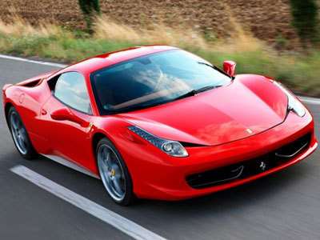
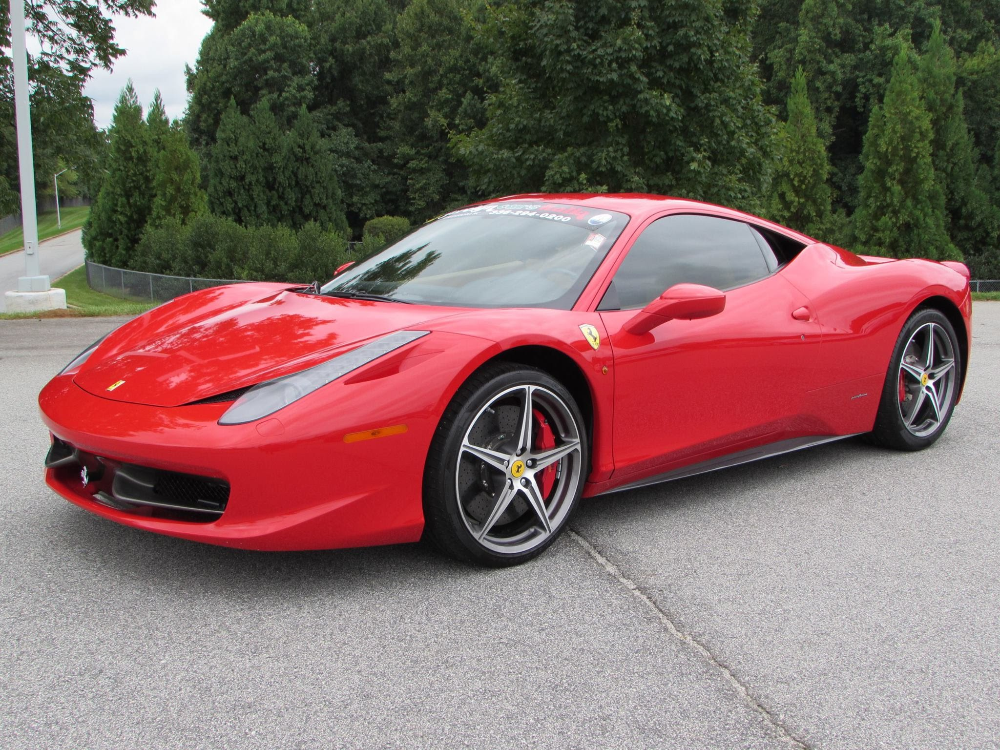
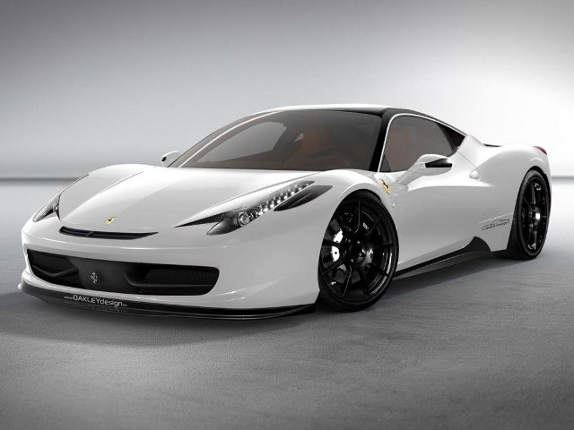
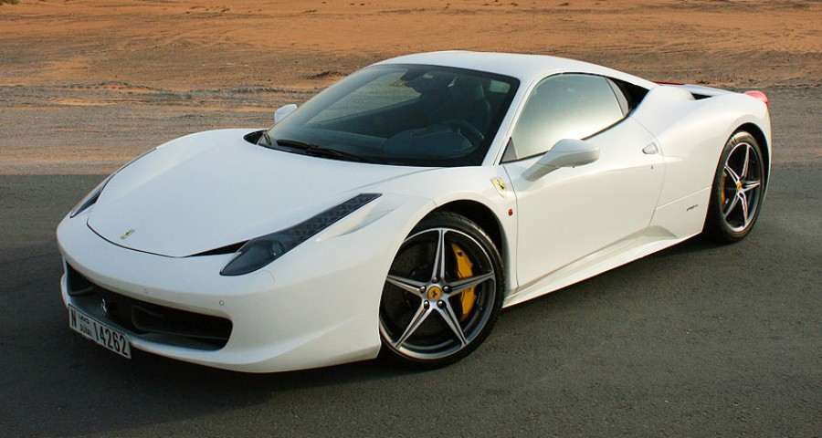

Ferrari 458 Italia là loại xe ô tô thể thao động cơ đặt giữa được sản xuất bởi nhà sản xuất ô tô Ferrari. Chiếc xe này được chính thức giới thiệu tại triển lãm ô tô Frankfurt vào ngày 19 tháng 9, năm 2009 nhằm thay thế chiếc Ferrari F430.
Ferrari 458 được trang bị động cơ V8 với dung tích xy lanh 4.5L (hay 270 cu in). Động cơ này có công suất tối đa là 562 hp (hay 419 kW, 570 PS) tại tốc độ vòng tua động cơ 9,000 vòng/phút.
Ferrari 458 được trang bị theo tiêu chuẩn hộp số Getrag gồm 7 số giống như chiếc Ferrari California. Đây là chiếc xe thứ tư của Ferrari (sau Enzo, Challenge Stradale và 430 Scuderia) không được trang bị hộp số sàn truyền thống.
Theo số liệu chính thức của Ferrari thì chiếc xe 458 này có thời gian tăng tốc từ 0–100 km/h dưới 3.4 giây và có tốc độ tối đa là 325 km/h.
